久々の『ムルモの旅』レポートになります(^^)。
皆さんは寝台特急やブルートレインをご存じでしょうか？ 昔は一日にたくさん走っていたのですが、最近は便利な飛行機や安い夜行バスに押され気味で、今や絶滅危惧種な存在だったりします。
そんな寝台特急ですが、２０１４年３月１４日にまた一つ、寝台特急あけぼの号が定期運用から外れてしまいます（臨時列車としては残りますが、残り続けることは保証されない）。
寝台特急あけぼの号は、１９９９年に私が初めて一人で鉄道旅行した際に乗車した思い出のある列車。それがなくなるかもしれないと聞かされたら、もう一度乗らずにはいられません！（ちなみに１９９９年以前は時刻表の見方すらわかりませんでした^^;）
ということで、２０１４年２月２７日に寝台特急あけぼの号に乗って、青森へ旅行してきました。半分以上が寝台特急のレポートですみませんが、なかなか濃い旅行になったので存分にレポートいたしますね！
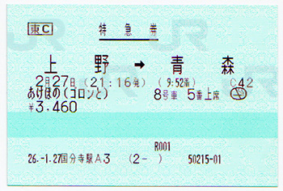
寝台特急の指定席券です。
発売日の１か月前に購入したものの、
希望のB寝台が満席で取れず、
『ゴロンとシート』というスリッパ・シーツ無しの格安ベッドに。。
だけど結果的には5000円近く安上がりになりました。
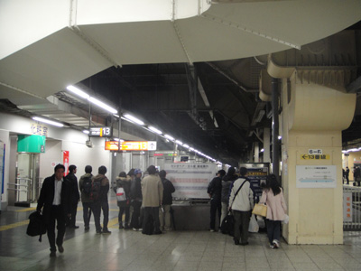
出発日の上野駅１３番線です。
あけぼの発車までまだ３０分以上もあるのに、
すでに人がたくさん！
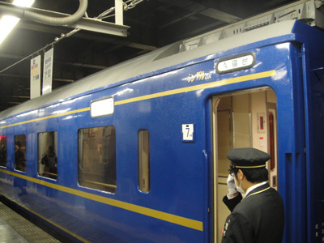
あけぼの号到着！
ブルートレインって雰囲気があっていいですね(^^)。
写真は最も料金の高いA寝台ですが、
チケットはかなりの争奪戦だったんだろうなぁ。
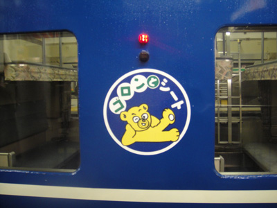
私が乗るのはこちらの「ゴロンとシート」車両です。
なんとも微妙なキャラクター(^◇^;)
ちなみにこの日は東京は朝からの雨で、
列車は雨で濡れまくりです。
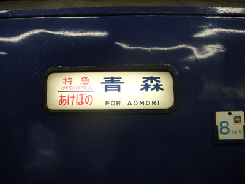
はるか先の終着地「青森」の文字に趣きを感じます。
ゴロンとシートの車両の行先表示板だけ
「青森」の文字がつぶれているのはどうしてだろう・・？
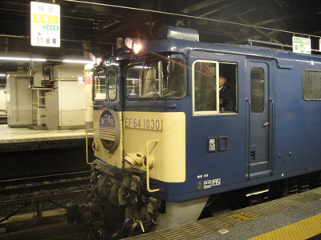
あけぼの号の先頭の機関車です。
周りは鉄道ファンだらけで、かろうじてこのアングルでのみ
撮影ができました。
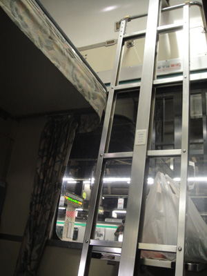
いよいよあけぼの号に乗車！
２１時１６分、あけぼの号は定刻通りに上野駅を出発しました。
ここから青森まで１２時間の旅が始まります。
私のベッドは上段なので、このはしごを上る必要があります。
降りるときは結構怖いですよ～。
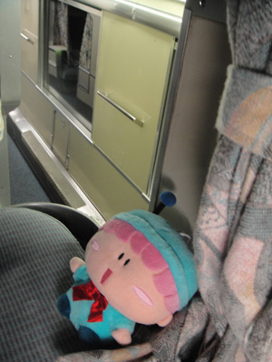
上段ベッドから通路を見下ろす感じに記念撮影！
こういうことができるのも
ブルートレインならではですね。
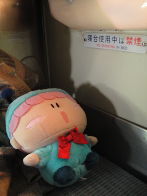
各ベッドには読書灯が付いています。
「寝台使用中は禁煙」の文字に
歴史を感じますね。
昔は喫煙が当たり前だった時代・・。
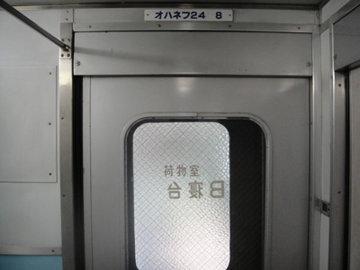
乗った車両のお隣は荷物室。
その先は先頭の機関車です。
この写真を撮影して、私は眠りにつきましたzzZ
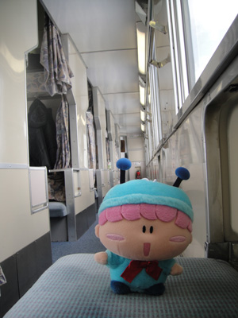
朝です！
通路側には折り畳みの椅子があって、
座って景色を見ることができます。
（ムルモさんは背が低くて窓に届かない…）
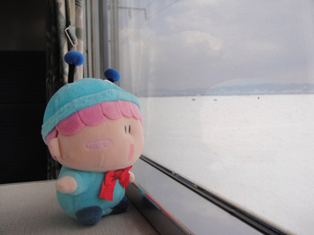
こちらはベッド側の窓です。
小さいテーブルがあるので、
ここからなら景色が見えるでしゅ☆
そして９時５２分、列車はいよいよ終点の青森駅に到着！ ベッドでぐっすり長い時間寝てしまったので、１２時間の旅はあっという間に終わってしまった感じです。
寝台特急が全盛期だった時代、たくさんの人がいろんな思いを背負いながら、あけぼの号に乗って青森へと旅立ったのだと思います。いろんな思い出を背負ったあけぼの号も、車両の老朽化で定期運用から外れるのは仕方ありませんが、思い出はいつまでも人々の記憶に残り続けて欲しいものですね。
さてここからは青森到着後のレポートになります！

まずは「青森魚菜センター」で朝食を！
どんな朝食かというと…。
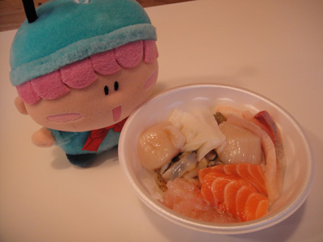
青森名物の『のっけ丼』！！
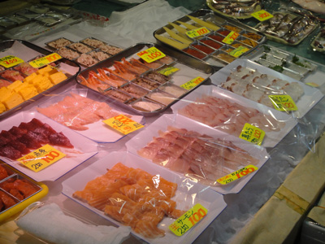
５００円または１０００円の食券を購入し、
好きな具材を選んで乗せてもらうシステムなのです。
ホタテは巨大だし、お刺身も新鮮でとてもおいしかった！！
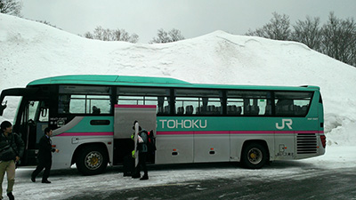
続いて、青森駅から１時間半バスに乗って
酸ヶ湯（すかゆ）温泉へ。
過去に積雪５６６センチを記録した
超豪雪地帯でも有名だったりします。
この日は晴れていたにもかかわらず
３メートルは雪が積もっていました。
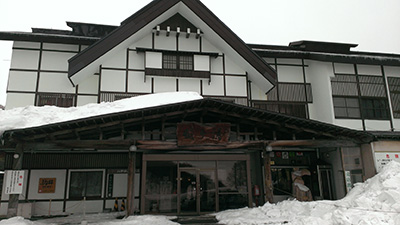
バスから降りたらすぐに温泉施設があるのもうれしいです。
私と同じように温泉目当ての人も何人かいました。
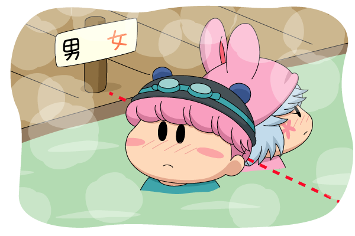
パピィ「この線からこっち来ないでよね（本当は来て欲しい）」
ムルモ「言われなくてもそうするでしゅよ（本当は来て欲しい）」
温泉は写真撮影不可なのでイメージ図です(^^;。
なんと混浴なのですが、マナーの問題などもあって
男女の見えない境界があるのが妙に面白かったです。
そして温泉の泉質は最高過ぎ～。
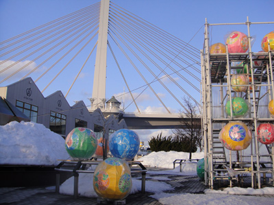
再び青森へ戻ってきました。
すでに夕方、今度は写真左側のお店
「A-FACTORY」へ向かいます。
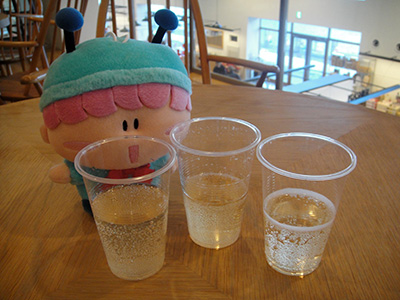
「A-FACTORY」２階には、りんごのシードル（お酒）を
飲み比べできるコーナーがあります。
色が一緒だからどれがお酒でどれが
ジュースなのかわからなくなってしまった(^◇^;)
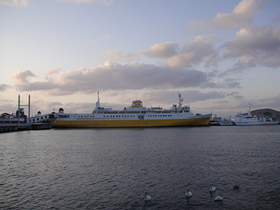
桟橋を歩くと、かつて青函連絡船として使われていた
八甲田丸が見えます。
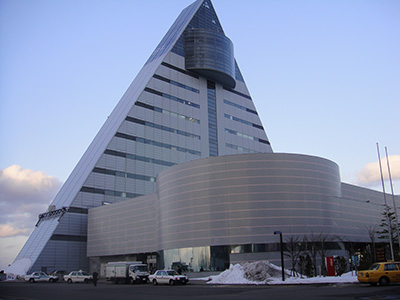
夕食はアスパムで。
建物は謎の三角形。。
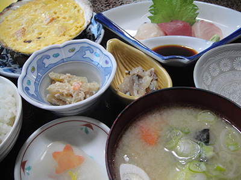
アスパム１０階の「西むら」さんで、
縄文定食をいただきました♪
青森名物のほたて貝焼きみそと、じゃっぱ汁を
同時に楽しめます！！

再び桟橋を歩くと、桟橋に並んでいる
だるま（？）がライトアップされていました。
ラストを飾るのにふさわしい、心温まる風景(^^)
（実際は海からの風が冷たすぎて寒すぎでした）
この後は２０時３０分の夜行バスに乗って東京へ戻りました。滞在時間は短かったけれど、いろんな体験ができて楽しかったです。そしてまたいつの日か再び青森を訪れたい！
最後に、長文にお付き合いいただきありがとうございましたでしゅ☆
(2014/3/6)